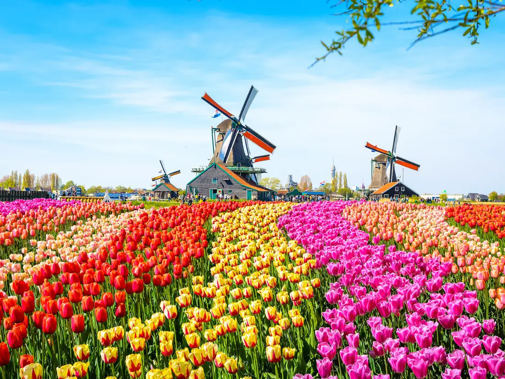
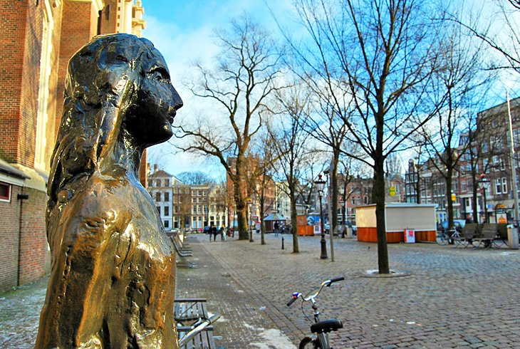
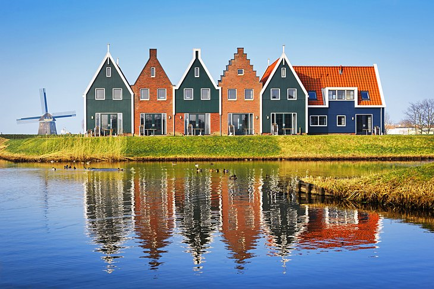

Canals of Amsterdam
The canals of Amsterdam are probably the most famous tourist attractions in the Netherlands. They're known all around the world. Millions of people come from all over the world to visit the canals every year. Even for Dutch people, going to see the canals is an amazing day out. You can walk around the canals, across the bridges for the best view. To get the full experience, you could get a tour of the canals on a ferry.
Tulip Fields
Another very popular Dutch tourist attratction is the tulip fields. The colorful fields full of tulips attract people from all over the world. The beatiful flowers, along with the famous windmills that are often located right besides the fields, are very popular because of their looks. But also because they are typical Dutch, so tourist often visit the tulip fields whenever they visit the Netherlands.
Anne Frank House
he Anne Frank House is a must-see when in Amsterdam. In the home where Anne's family (Jewish refugees from Frankfurt) hid for much of WWII, is where this remarkable girl wrote her famous diary. Although she died just two months before the war ended, her legacy lives on through her words, which have since been translated into 51 languages.
The back of the now restored house where the Frank family had their hiding place has been kept in its original state as much as possible. It's an important piece of one of the most tragic events in world history. A brave young girl who continues to inspire people around the world.
The Ijsselmeer (Zuiderzee)
Among the most beautiful villages in the Netherlands are the small hamlets along the Ijsselmeer, the freshwater lake that was created by building the "Afsluitdijk", the dyke that closes the see entrance to the Zuiderzee. These towns flourished during the Netherlands' Golden Age, when they had access to the Atlantic and prospered as fishing and trade centers. They lost importance as the harbors silted up.